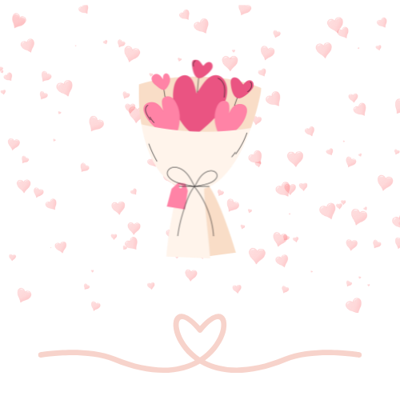
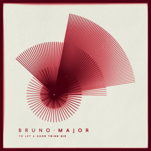
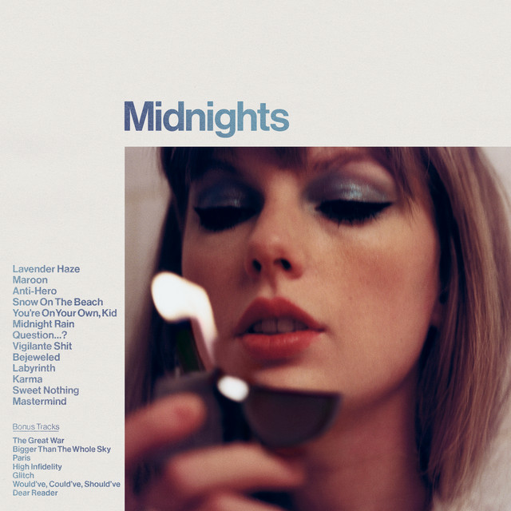
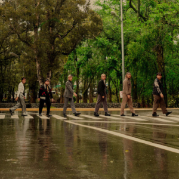

Will you be my Valentine? (sorry kasi na-busy talaga ako kahapon. hindi ko naman talaga nakalimutan na valentine’s day huhu, promise. nasabay lang talaga siya sa paggawa ko ng thesis ko kaya super naano ako sa tasks. ang daming need tapusin kasi TT)

happy valentine's day, lovey ko !! ^^
songs that remind me of u (wow naman) 🎶

nothing – fave song ko lang talaga siya HAHAHAJAS, pag tumutugtog siya parang automatic ikaw naiisip ko. wala namang deep reason, parang naging ikaw na yung association ko dun. pag naririnig ko siya, ikaw agad.
sweet nothing – cute lang. "to you i can admit that i'm just too soft for all of it?!

snow on the beach - alam mo na bakit HAHAHAHA slowburn :P

patutunguhan - ito naman parang about sa kung saan papunta yung isang bagay diba. so napapaisip ako kung san ba to papunta, kung ano ba tayo in the long run. idk, nagmamanifest ako na sana tayo talaga JKAHDJHAJDHA ipipilit ko to
kung maging akin ka man - is a song that simply supports whatever feelings i have for you, even if you’re a little doubtful. alam ko naman na may kasalanan din ako dun, and i understand why that made you unsure. pero sobrang thankful lang talaga ako that you still chose to be patient with me and tried to understand my side :>
14 reasons why i like you (because it’s feb 14 kahit 16 na huhu)
1. una sa lahat, kasi mortal enemies tayo HAHAHA joke. pero feel ko dun pa lang nag-click na agad tayo. parang ang bilis ng connection, parang same vibes agad ganun
2. we immediately clicked. hindi siya pilit or awkward huehue
3. i feel super comfy with you. nakita mo naman kung paano ako mag-yap sayo diba 😭 hindi aq nahihiya maging madaldal at weird minsan HAHAHAH.
4. you love dogs just like me. automatic plus points pag dog lover.
5.ang cute mo pag sinusungitan mo ko. ewan q baliw siguro ako pero naccutetan talaga ako kasi alam kong hindi mo mine-mean yun
6. ang cute mo rin kasi hindi ka marunong mag-express ng feelings mo. parang nahihiya ka pa or nahihirapan ka sabihin, pero ramdam ko naman :<
7. yes opo, ang ganda mo. physically and emotionally. hindi lang sa itsura, pero sa way mo mag-isip and umintindi HAHAHAHA ANG OFF NAMAN NITO
8. you really try to see my side kahit ang hirap ko intindihin minsan. and i appreciate that more than you know ^^
9. you listen. kahit nonsense na kwento ko minsan, nakikinig ka pa rin and you respond like it actually matters :>
10. i like how honest you are. hindi ka ano, kung ano talaga nasa isip mo, yun sinasabi mo (kahit masungit 😭)
11. joker ka kasi HAHAHAHAHA medyo funny ka minsan, bigyan kita points dun
12. you’re lowkey soft kahit kunwari ano ka but ramdam ko yung soft mo behind all that
13. i feel safe around you. emotionally safe. hindi ko kailangan magpanggap or mag-adjust masyado (di ko branding to, sana di basahin TT HAHAHAH)
14. and lastly, i just really like you. walang masyadong deep explanation. i just do ^^